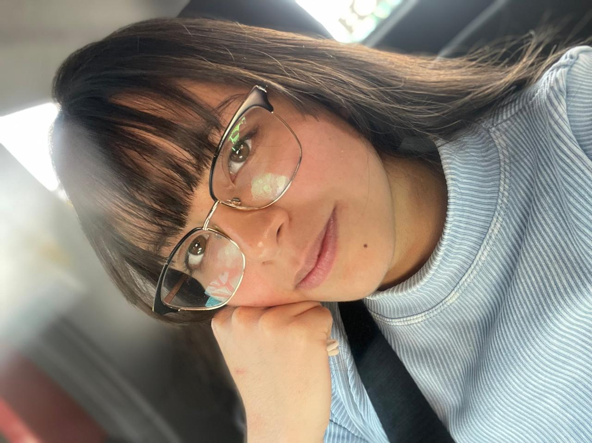

Hola, mi nombre es Vielka Ailyn Herrera Cruz.Tengo 20 años y naci el 28 de Dicienbre de 2005 en la Ciudad de Mexico.
A los tres me mude a Pachuca y ingrese a Kinder Navani despues en la primaria estuve en Colegio Arboledas.Cuando tenia 15 años ingrese a Conalep Pachuca Hidalgo Plantel 2
Da clickEstudio en la Universidad Politecnica Metropolitana de Hidalgo y estudio en la carrera de Ingenieria en Tecnologias de la Informacion ubicado en Tolcayuca
We
are
lions!
Visita la pagina de la universidad Da click
Mi pasatiempo favorito es dibujar y mi comida favorita son las alitas y el pozole